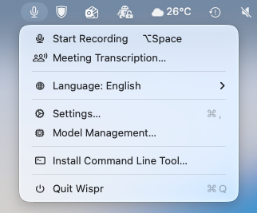
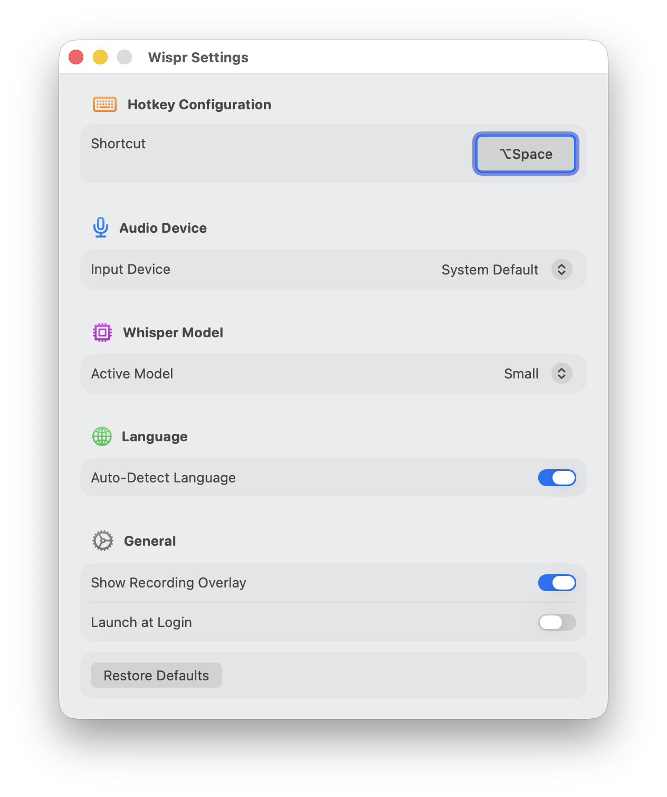
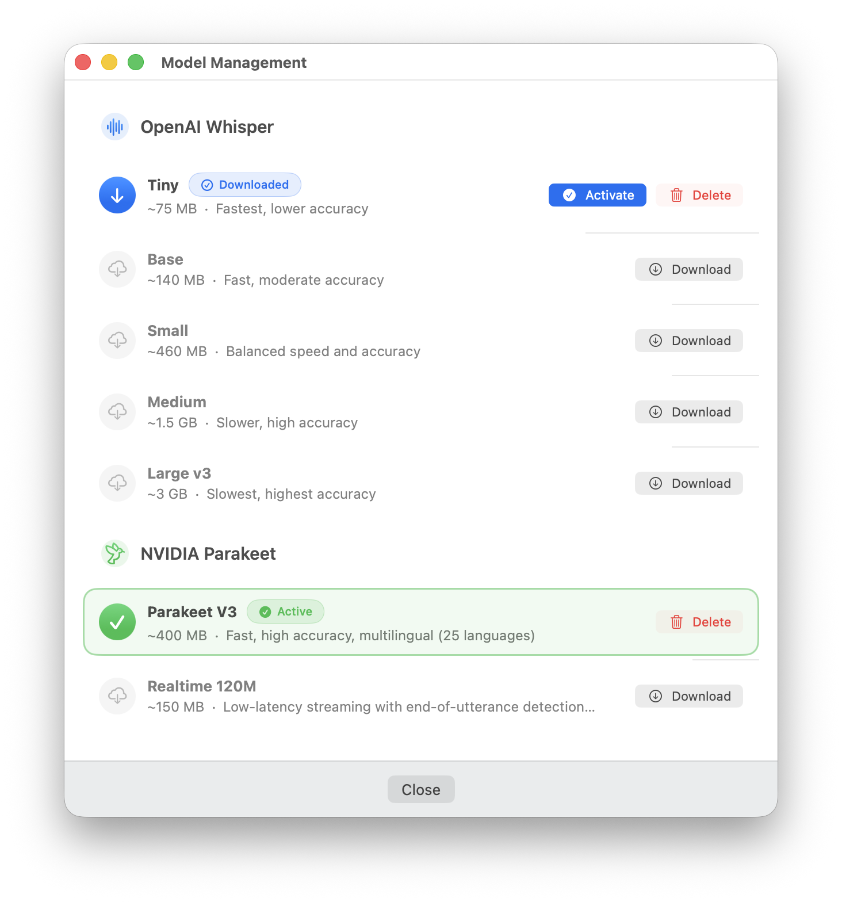

Global hotkey
Press Option+Space anywhere on your Mac to start dictating. Release to transcribe. It's that simple.
Wispr · On-device dictation for macOS
Wispr listens on your Mac and nowhere else. On-device AI turns your speech into text in any app — no cloud, no accounts, and no audio ever leaving your machine. Free and open source.
01 · Install
Two easy ways to install. Runs on Apple Silicon Macs.
Signed and notarized installer, straight from GitHub.
Download the .pkg installerLatest release on GitHub
brew tap sebsto/macos
brew install wispr
Help keep it free and open source.
Every contribution helps
02 · Features
Press Option+Space anywhere on your Mac to start dictating. Release to transcribe. It's that simple.
All voice processing happens on your device. No audio ever leaves your Mac. No cloud, no servers, no tracking.
Powered by on-device AI models including Whisper and NVIDIA Parakeet. Get accurate transcriptions in seconds, even without internet.
Dictate in any language. Auto-detect mode figures out what you're speaking, or pin your preferred language.
03 · How it works
Press and hold Option+Space (or your custom shortcut) from any app.
Talk naturally. Wispr captures your voice and shows real-time audio feedback.
Release the hotkey. Your words appear right where your cursor is.
04 · Onboarding
A guided setup walks you through everything you need.


05 · Screenshots
Clean, native interface that feels right at home on your Mac.



06 · Use cases
Draft articles, emails, and documents faster than typing. Let your thoughts flow without keyboard friction.
Document code, write commit messages, and respond to issues using your voice. Works in any text field.
Take notes during lectures, write essays, and capture ideas quickly. Perfect for research and study sessions.
Reply to messages, fill forms, search the web. Anywhere you type, Wispr makes it faster.
07 · Support
Your support keeps Wispr free, open source, and privacy-focused for everyone.
Donate via Revolut